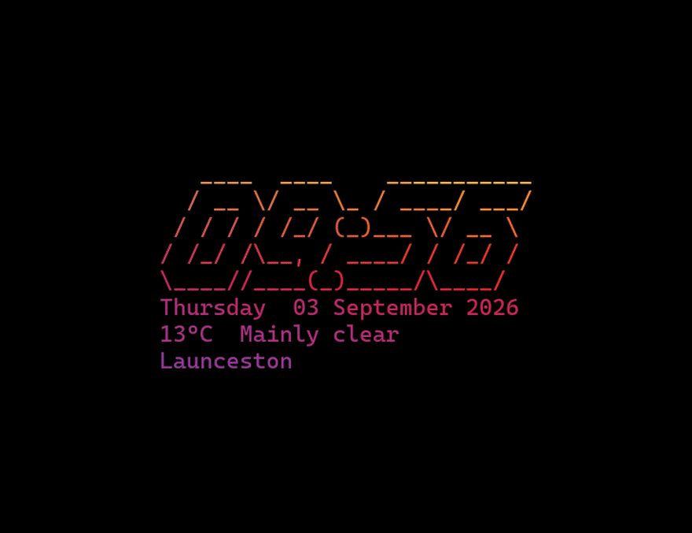

tte-screensaver
The clock is the ASCII. A Windows 11 screensaver that runs Terminal Text Effects on live time, date, and weather so a house screen never sits still long enough to burn in.
Get tte-screensaver.scr source
Install
- Right-click the
.scr→ Install (or copy it toC:\Windows\System32). - Personalize → Lock screen → Screen saver settings → tte-screensaver.
- Settings: paste lat/lon from Google Maps for weather. Leave empty for time and date only.
Fork of limehawk/tte-screensaver (MIT) — limehawk built the multi-monitor pygame + TTE pipeline. Effects by TerminalTextEffects (ChrisBuilds). Inspired by Omarchy. Weather from Open-Meteo.